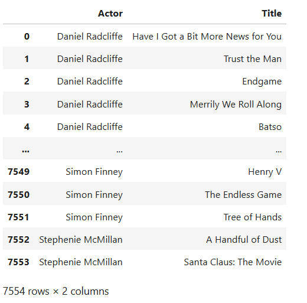
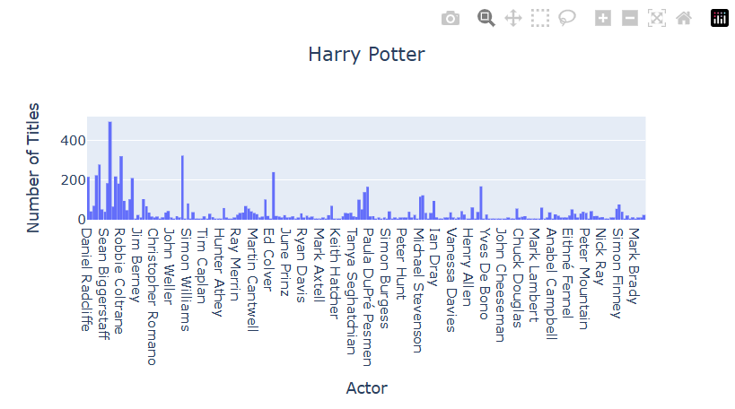
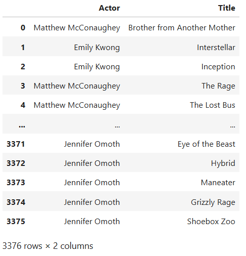
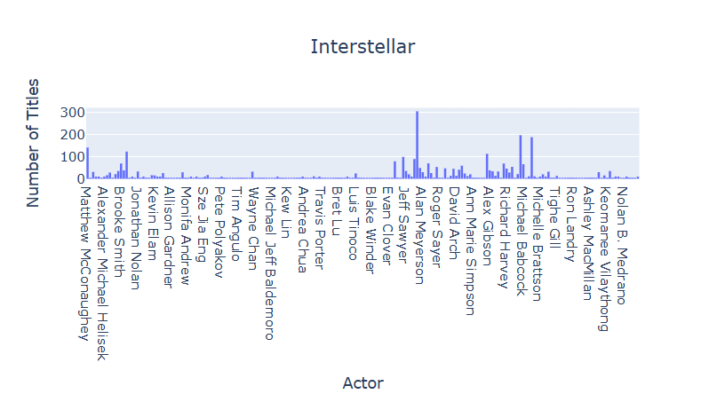
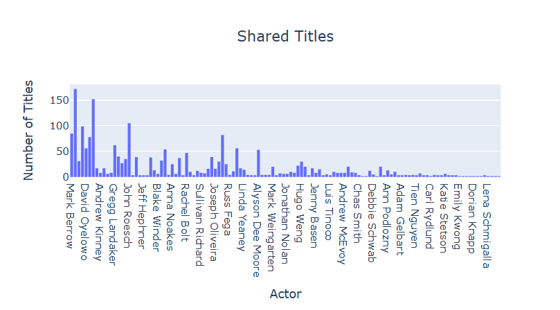

Import libraries
To compare the actors starred in our favorite movies, we must first scrape the TMDB website to collect information on the corresponding movies’ actors. To begin scraping, we must first import all libraries we’ll be using.
from scrapy.spiders import Spider
from scrapy.http import Request
from scrapy.linkextractors import LinkExtractor
import random
import scrapy
import pandas as pd
imported plotly.express as pxThe first few libraries will help us crawl through the sites themselves and navigate from one page to the next to extract all the actors we are looking for. The second to last library is used to create a pandas dataframe which we’ll see at the end.The very last library is used to create our visualizations we’ll visit at the end as well.
Parse through the website
The code below provides the url for where we start scraping. Using the f strings allows us to implement {subdir} as a parameter when we initialize our scraper.
class TmdbSpider(scrapy.Spider):
name = 'tmdb_spider'
def __init__(self, subdir="", *args, **kwargs):
self.start_urls = [f"https://www.themoviedb.org/movie/{subdir}/"]
Three parsing methods:
Method 1:
Starting at the movie page, we’ll navigate to the Full Cast & Crew page by hardcoding the cast page of the movie Through the yield Request, we’re calling the next parsing method to navigate through the actual list of actors.
def parse(self, response):
cast_url = response.url + '/cast'
yield scrapy.Request(cast_url, callback=self.parse_full_credits)Method 2:
Then we’ll use the following method to join each actor in a list and navigate to their pages We first use respose.css() in combination with the .getall() method to sift through the column of actors themselves in the cast column and ignore the crew column. The for loop will then navigate and join the individual actor’s links so that that the yield request can call the next parsing method after crawling through these actors’ links.
def parse_full_credits(self, response):
cast_links = response.css('ol.people.credits li a::attr(href)').getall()
for actor in cast_links:
cast_url = response.urljoin(actor)
yield scrapy.Request(url = cast_url, callback = self.parse_actor_page)Method 3:
Now starting at an actor’s page from the list, we can navigate the actor’s name As before, we use response.css() with the .get() method this time to find all the actor’s names, and now we can look each indivdual’s roles they’ve been casted for. Here we want to create an empty set because we started with a list of the actor’s names, but we want to prevent any of their roles being listed more than once. Because set’s can only contain one element once, this prevents any duplicates. Then we can proceed to adding the name of each movie/TV show the actors were casted in from the list of roles into the set.
def parse_actor_page(self, response):
actor_name = response.css('h2.title a::text').get()
roles = response.css('td.role')
cleaned_roles = set()
for role in roles:
movie_or_TV_name = role.css('a.tooltip bdi::text').get()
if movie_or_TV_name not in cleaned_roles:
yield{
"actor" : actor_name,
"movie_or_TV_name" : movie_or_TV_name
}
Now that we have found our results, we can create out visualizations and tables using a pandas dataframe
Let’s compare two movies Sarah Burnett chose her favorite film as Harry Potter and the Philosopher’s Stone while Reina Schmoock Chose Interstellar. We want to compare our favorite films to see what movies/TV shows the actors are casted in are shared between the two sets of actors.
Here are the two csv files of Sarah’s favorite film and Reina’s favorite film
results = pd.read_csv("results.csv")
my_results = pd.read_csv("my_results.csv")First, we have the dataframe of actors from Harry Potter and their other roles

And then we can use the dataframe with plotly express to create a historgram comparing the actors from Harry Potter and the number of other roles they appear in
actors = results['Actor']
HP = px.histogram(actors, x = 'Actor', nbins = 5, title = 'Harry Potter',
labels = {'Title':'Number of Roles', 'Actor': 'Actors'})
HP.update_layout(
xaxis_title="Actor",
yaxis_title="Number of Titles",
title_x=0.5)
HP.show()
This creates the following histogram

Next, we have the dataframe of actors from Interstellar and their other roles

And then we can use the dataframe with plotly express to create a historgram comparing the actors from Harry Potter and the number of other roles they appear in
actors = my_results['Actor']
INT = px.histogram(actors, x = 'Actor', nbins = 5, title = 'Interstellar',
labels = {'Title':'Number of Roles', 'Actor': 'Actors'})
INT.update_layout(
xaxis_title="Actor",
yaxis_title="Number of Titles",
title_x=0.5)
INT.show()This creates the following histogram

This creates the following histogram
